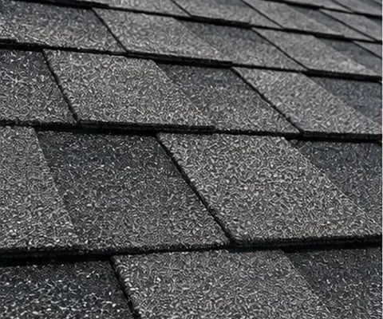
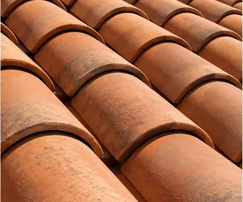
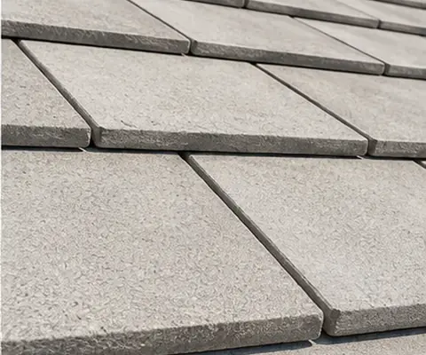
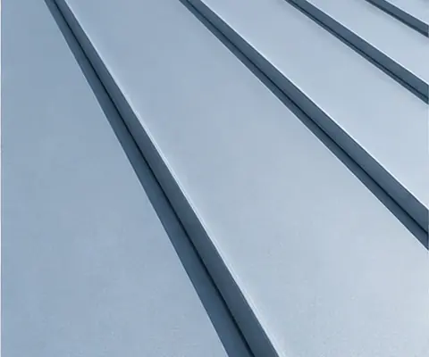
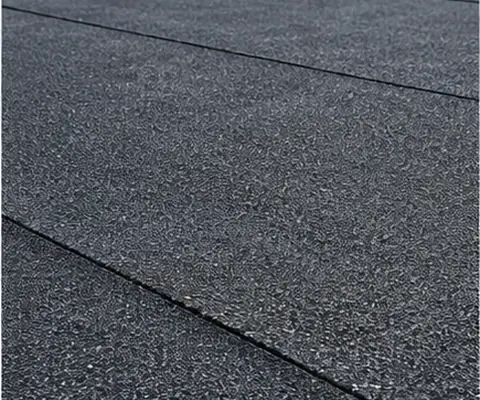

Start with the facts.
Look at the roof surface, flashing, drainage, and visible wear before deciding what it needs.
Repair, replace, or maintain your roof with a plan that fits your home.
Start with a roof inspection and a clear conversation.
Every roof has its own history. A thoughtful inspection helps identify the condition, the material, and the work that makes sense next.
Look at the roof surface, flashing, drainage, and visible wear before deciding what it needs.
Review repair, maintenance, and replacement options in plain language.
Get a scope of work that reflects the roof, the property, and your priorities.
From the first inspection through ongoing care, choose the work your roof needs.
Understand roof condition and identify areas that need attention.
Address localized damage, leaks, and worn components.
Plan a new roofing system when repair is no longer the right path.
Schedule routine care and keep roof records organized.
Asphalt shingle, tile, metal, and low-slope systems each need a material-specific approach.





A clear path from first contact to a recommended scope of work.
Review the surface, details, and any concerns the property owner has noticed.
Show what needs attention and which options are worth considering.
Agree on a practical scope, schedule, and expectations before work begins.
The team explained the roof condition clearly and gave us a practical plan.
Sample homeownerWe understood our repair options before any work began.
Sample homeownerThe process was organized from inspection through the final walkthrough.
Sample homeownerA professional inspection can identify the extent of damage, age-related wear, and whether repairs would address the underlying issue.
Yes. Shingle, tile, metal, and low-slope systems have different components and repair methods. The assessment should account for the material on your home.
Ask for the proposed scope, materials, timing, preparation, and any conditions that could change the work after closer inspection.
Start with a conversation about the roof you have and the work you are considering.